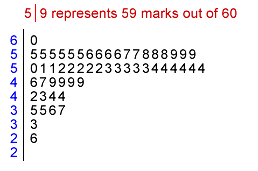

Value of stem and leaf plots
Although a stem and leaf plot contains more detail about the values than the corresponding stacked dot plot, this extra information rarely helps you to understand the data.
Project marks
One situation in which the author has found stem and leaf plots useful is to show the distribution of marks to students. The stem and leaf plot below shows the marks that students attained in a recent statistics project that was marked out of 60.

The stem and leaf plot shows the distribution of marks well, but also allows any student to determine exactly his/her place in the class. For example, a student who got 57/60 can easily count that 7 students got a higher mark in the class.
In most situations however, stem and leaf plots have few advantages over stacked dot plots as graphical displays of data.
Drawing a stem and leaf plot by hand
Stem and leaf plots are mostly used because they are easy to draw by hand.
We now explain how to draw a stem and leaf plot with pencil and paper.
Identify the stem and leaf digits
The most significant digits of any value are its stem, the next digit is called its leaf and any further less significant digits are discarded.
The position of the leaf digits should usually be done to give between 10 and 20 distinct stems. If this is not possible, the stems can be split to give this number of classes for the plot.
Examples
Drag the slider to split each value in the list into a stem and a leaf digit.
Use the pop-up menu to see how other values might be split into stems and leaves. Observe that:
Drawing the stem and leaf plot
After identifying the stems and leaf digits for the values:
Example
The example below illustrates the process of constructing a stem and leaf plot from a list of values (on the right below).
Click on the first value. The digits to the left of the decimal point identify the value's stem and its 'tenths' digit is written against it. Continue clicking the values in the list to build up the stem and leaf plot.
Finally, click Sort Leaves to sort the leaves into order on each stem.
Human Resources Manager Salaries
Our final example shows how to draw a split stem and leaf plot for the human resources manager salaries data on the previous page.
Again, click the values to split them into stems and leaves and add the leaves to the plot. Note that the 'hundreds', 'tens' and 'units' digits of the values are ignored.